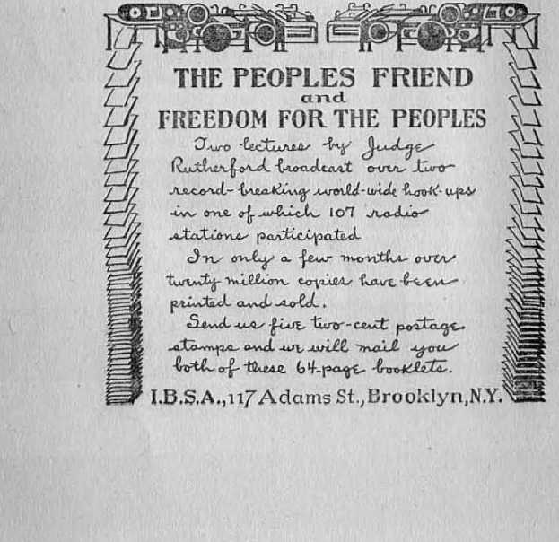
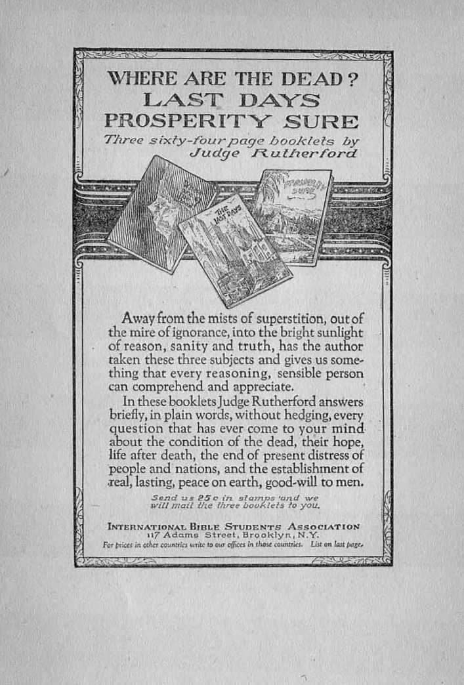
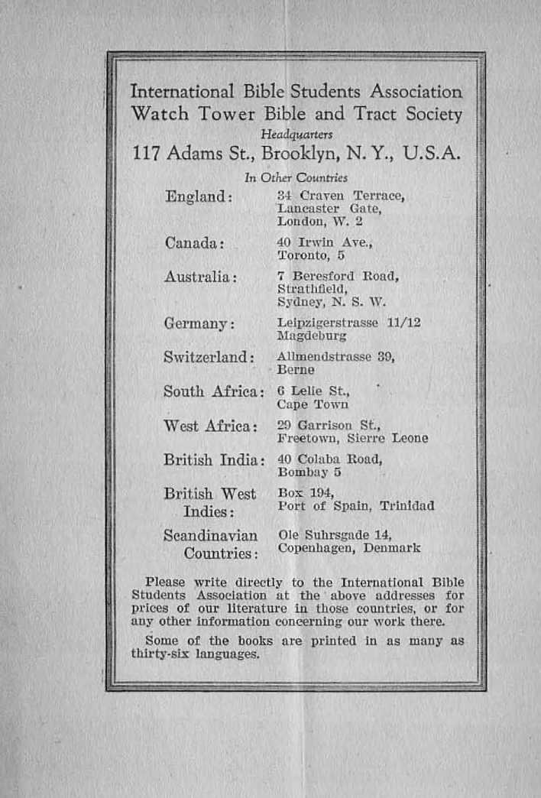
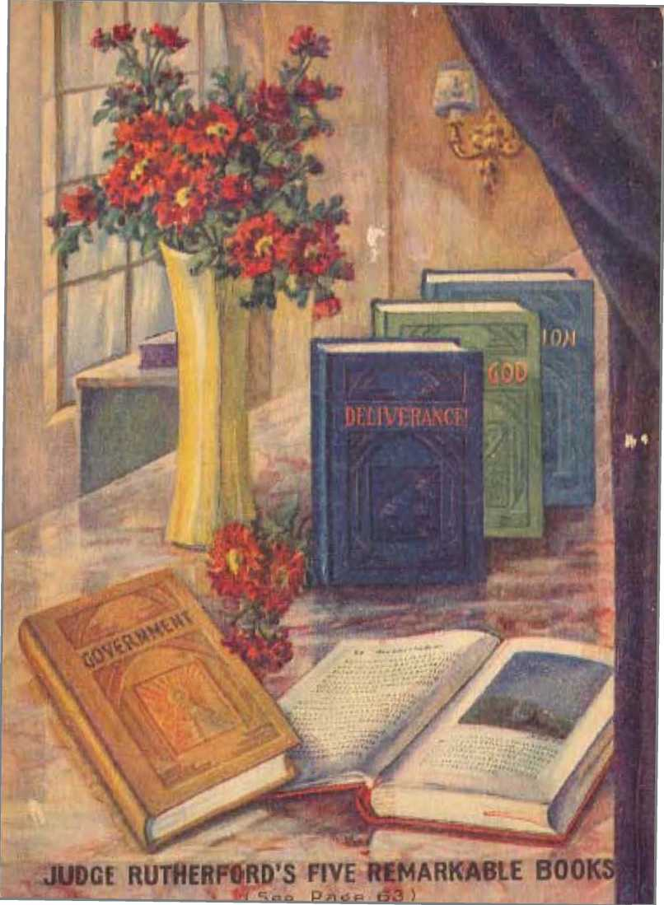

of the Judges of the Preachers of the Nations of the Financiers of the Politicians of Satan’s Organization of the People
by
J. F. Rutherford
I
Judge Rutherford’s books, The Harp of God, Deliverance, Creation, Reconciliation, Government and others, published in thirty languages, have, in the past six years, reached a circulation exceeding forty-four million copies.
Made in XT. S. A.
Copyrighted 1929 and published by the International Bible Students Association Brooklyn, New York, U. S. A.
London, Toronto, Melbourne, Cupe Town, Berne, Magdeburg,
FOREWORD
DO YOU know why this is such a td range period of history, a day of probes and exposures? The world’s judges, preachers, nations, financiers ami politicians, mid all of Satan’s organization are before the bar of divine judgment. It is n fearful time for them. A just and fair trial and judgment i>| (he people's cause is just ahead. 'Cite outcome will be glorious for mankind. Head herein about it, and hail the day I
THE PUBLISHERS
THE night was exceedingly cold. A heavy gale was driving the snow and sleet. The unprotected were chilled to the bone. The shops were closed, and there was no shelter in the street to shield one from the fury of the storm. Just around the corner stood a church edifice. Not only was it a place of shelter from the driving storm, but the steam from its furnace warmed the atmosphere inside and made the church a pleasant place in which to rest. There was a light in the vestibule, indicating that the church door was unlocked.
A dozen or more ragged and hungry men and women simultaneously rushed for the church door that they might find some relief from the perils of the night. They entered the church building quietly and orderly. The church service was in progress. The velvet-padded pews of ease and elegance were occupied by a small number of old ladies and a few men, all of whom appeared to be those who enjoyed financial prosperity. Farther back in the room a young man sat alone. Seeking knowledge, he had thought he might learn something in that church; hence he had gone in.
The hymn had been chanted, the prayer uttered, and the collection had been gathered in silver platters. For some moments the preacher had recounted to his small congregation the
3
many important tilings the church had accomplished concerning the World War and the election of public officers and the enforcement of the dry law.
Suddenly the door swung ajar and a great gust of wind forced a cloud of sleet and snow inside (he warm room, followed quickly by the ragged company of men and women above mentioned who wore seeking shelter from the storm. The minister paused in his oration and with a scowl watched Ilie unwelcome visitors crowd into (he rear pew provided for the less prosperous. Fixing his eyes upon the unfortunates the minister continued to gaze at them in silence until every eye in the room was turned in the direction of the motley newcomers. Some of (Im women had no head covering and their hair was matted with snow and sleet. The men wore not pleasing in appearance. They had been suffering outside from the storm, but now, observing that, they were unwelcome, (hoy were even more uncomfortable under the searching gaze of the minister and his rich parishioners. The young man who sat alone looked upon this poor company with great pity. He was the only one in (Ind presence who did.
After what seemed an interminable pause (he minister, with his gaze still, fixed upon the bedraggled company in the rear, with great gravity and with pious and sanctimonious voice began to speak. His words were in substance these:
“The judgment of God is against you. The storm has driven you from the outside. Here you have come and found protection and
warmth. You come here not to do the church any good nor to build up society and the government. You come here only because you are driven here by this storm from heaven. Soon the storms of hell will be beating against your naked souls and you will find a heat from which you can never escape. In that place of doom the fires are never quenched and the worm dieth not. I warn you to escape the wrath of God now while you can. Go and find work. Save your money and come here and pay your vows and your obligations to the church. Let the judgment of this night that has driven you into this blessed church be a warning to you to flee from the wrath of God to come. Behold, he comes to execute judgment upon all the ungod-' ly. Beware! The church alone can render you aid, but you must do your part." Then with the voice of assumed charity the minister added, addressing the congregation: “We will now receive the silver offering for foreign missions.”
With, the benediction said, the favored ones of the congregation gathered around the minister to commend him for his timely words of warning to that uncouth people that had unceremoniously interrupted the church service. While this was being done the ushers saw to it that the ragged, motley and hungry visitors were quickly sent forth from the building. As they huddled in the street outside the door-some of the women asked: “Do you think this is the beginning of God's judgment against us? If this storm is just the beginning, what will hell be?"
The lone young man had followed the company of unfortunates out of the church. He saw their pinched faces and shivering bodies and their seeming distress of mind as well as of body. They disappeared in the darkness. He hurried ttway to his room. He kept asking himself these questions: ‘ Does that minister represent God ' Is (hat. church the church of the loving God1? Those mon nnd women seemed to be very poor. Will God's judgment be particularly harsh against the poor? Is not the Bible God’s Word of truth? Does it nut say that God is love .' How then can I hat church represent God?” Then and I here the young man resolved to begin a careful study of the Bible, that he might learn what is meant by the judgment day and who will bo judged mid what will be the result upon those who are judged. What he learned from the Bible is set forth in the following pages. It is the truth, because taken from the Word of God.
Definitions
Judgment: Judgment menus a formal judicial decree delivered or eiilemd on record by one having authority and jurisdiction of the ease or subject matter under consideration. A judgment is delivered or rendered by a judge.
Judge: A judge is one who judicially pronounces sentence or renders judgment. He must be clothed with power, authority and jurisdiction so to do.
Legal: Judgments may lie rendered either legally or illegally, (hie who wrongfully assumes to render judgment does so illegally. A legal
judgment is rendered by a fully qualified judge after hearing the facts, weighing the same, and applying the facts to the law. The judgment rendered by one having neither authority nor jurisdiction is void, and no one is bound to obey it. A judgment rendered by one having power or authority or jurisdiction is binding.
Issue: The word issue, as used in connection with judgment, means the question or material point that is in dispute and which is submitted to the judge for determination. The issue or question in dispute may be affirmed by one and denied by another. The rights of the parties to the issue joined are considered and determined by the judge hearing the matter. When a creature is on trial before a court or judge and the question or issue is whether he has disobeyed the law, the facts are heard and the law applied to the facts, and then the judgment follows.
Trial: The trial or hearing of the facts must precede the rendering of the decree oi- judgment. It follows, therefore, that there can be no just or proper judgment rendered without a hearing or trial.
Jehovah God is the.great Judge over all. All rightful authority proceeds from him. He holds the power and jurisdiction over all matters and therefore he can delegate that power, authority and jurisdiction to any one whom he may choose. He is the Supreme Justice: “For God is judge himself .”—Ps. 50: 6.
God is just and merciful. “Justice and judgment are the habitation of thy throne: mercy and truth shall go before thy face.” (Ps. 89:14) “The law of the Lord is perfect. . . . The
statutes of the Lord are right.” (Ps. 19:7, 8) Therefore God gives every creature a fair trial or hearing before final judgment is rendered. His judgments are impartial. “Ye shall not respect persons in judgment; but ye shall hear the small ns well as the great; . .. for the judgment is God’s.” (Deut. 1:17) God therefore assures every uno a fair hearing or trial. “Doth our law judge any man before it hear him, and know what he doeth?”—John 7: 51.
Judge Christ Jesus
After the consecration of Jesus, at the time of his baptism in the Jordan, Jehovah God appointed and anointed him as the great Judge. That means that Jehovah God delegated to his beloved Son the power and authority and jurisdiction to hear and judge all creatures. Jesus Christ was clothed with all power and authority in heaven and in earth at his resurrection. (Matt. 28: 18) It is written concerning him: “For the Father judgeth no man, but hath committed all judgment unto the Son.” (John 5:22) Jn due time must “all appear before the judgment seat of Christ”. (2 Cor. 5:10) Acting as Jehovah God's executive officer Jesus Christ renders judgment in full accord with the will of God.
Jurisdiction: The literal meaning of the word jurisdiction is “the right to say”. It means the right, power and authority to hear and to determine the cause under consideration and to execute the same. Of necessity time enters into the matter because there is a proper or due time to hear and determine causes of action.
The fact that Jesus Christ was clothed with power and authority at a specific time does not mean that he would immediately begin to exercise that authority and render* judgment. Jehovah God fixes the due time to hear and determine all matters. When the court is set for hearing, that is the proper and due time. Before Jehovah God, the great Supreme Judge, delegates power and authority to others to act as judges, he puts them upon trial and judgment. We now consider the judgment
Of the Judges
Since all authority proceeds from Jehovah God he delegates power* and authority to others. This he does only after a trial and judgment of those whom he makes judges. Uis beloved Son was God’s active agent in the creation of all things. Then he was made flesh and dwelt amongst men on earth that he might by his full obedience to God's law become the Redeemer of man. (John 1:14, 29) At the Jordan he made an agreement to do God’s will, which meant that he must be fully obedient to God’s expressed law. At that time God made a covenant with Jesus that he should be the great Judge and Ruler of all creation. But before the authority was fully and completely conferred upon Jesus he must undergo a trial and be judged and prove worthy. For three and a half years Jesus was subjected to the most severe test, which brought upon him much suffering. He learned obedience by the things which he suffered. (Heb. 5:8) He ‘'became obedient unto death, even the [ignominious] death of the
cross. Wherefore God also hath highly exalted him, and .given him a name which is above every name”. (Phil. 2:8-11) He was tested and proved by Jehovah and was made judge over all creatures, to hear and render judgment in God’s due time. That includes power and authority to judge his associate judges; also to judge the clergy, the nations, the financiers, the politicians, Satan mid his organization, and all the peoples, including the living and the dead.
God planned that Jesus Christ should have associated with him a small company taken from amongst men, who in due time should participate with him in judgment. Each one of these must first fully agree to do God’s will, which means consecration; and then each must be put upon trial and in (hat trial must prove himself loyal and faithful unto God and to Christ. Jesus said to his disciples that because they had been faithful with him in his trials they should share with him in his kingdom, and in his throne or judgment seat.—Luke 22: 28-30.
To those who agree to be his followers Jesus says: “And he that overcoineth, and keepeth my works unto the end, to him will I give power over the nations.” “To him that overcometh will I grant to sit with me in my throne.” (Rev. 2:26; 3:21) Again, it is written: “Do ye not know that the saints shall judge the world?” (1 Cor. 6: 2) From the time one becomes a true follower of Christ until his death he is on trial. The final judgment concerning such is rendered by the Lord Jesus Christ when he comes to his temple.—Mal. 3:1-3; 1 Pet. 4:17; Ps. 11:4, 5.
"You believe it because you can prove it. That's exactly how simple and bow satisfactorily proven are the facts stated by Judge Rutherford iu his book
The facts he gives are of more interest and vital importance to you than anything else iu the whole world. We say that because the biggest thing in every one's life is life itself. Why are we here? Whence came wet Where arc we going I
ERE S what the author himself says about the book: “A plain statement of the gracious provision Jehovah has made to bring all men into full harmony with himself that the obedient ones may have everlasting life on earth in contentment and complete happiness."
We can promise you a genuine surprise in this book if you are willing to risk 45 cents in stamps for it.
Mailed anywhere in the U.S.A, for45c
International Bible Students Association 117 Adams Street Brcroklyxx prides in_/ir-ct^n ceunfrics tor wr qjfie&s in ftncwecou/i triea.
Zttfifon Za<Tif/?syr.
God made man for the earth, not for tieaven. Only those who are faithful unto death in doing the will of God will he a part of the heavenly kingdom. Jesus said that not every one that says, Lord, Lord, shall enter the kingdom, but “he that doeth the will of my Father”. (Matt. 7:21) These will be associate judges with Christ in a part of his judgment work.
Of the Preachers .
The rule of action, or law of the judgment, is written in the Bible, which is God’s Word of truth. All just judgments are rendered in full accord therewith. For this reason the student of the Bible can determine from the Bible what will be the nature of the judgment of the Lord. Jesus Christ renders such decree or judgment, and his followers have something to do therewith. (Psa. 149:8, 9) The due time for judgment to begin has come, and therefore the person who is devoted to God can study the matter and get an understanding thereof.
The preachers or clergymen claim to have agreed to do God's will. They claim to be representatives of God and of Christ. Among them there have been some good men and many who have been otherwise. A man is good only when he is entirely devoted (o God. God calls those who are truly his sons his “watchmen”. Because the preachers pose before the people and claim that they represent God and that they are his sons, God caused his prophet to write concerning them and ironically to call them watchmen. These men claim to have a knowledge of the truth. They are therefore on trial
as preachers or claimed representatives of the Lord.
The unfaithful preachers have ignored God’s Word and have looked to their own selfish interests. They have used their congregations to further their own desires. They love honor of men and seek their own personal comfort, each one looking to his own congregation for the things that he wants. Concerning such God's prophet wrote: "His watchmen are blind; they are all ignorant, they are all dumb dogs, they cannot bark; sleeping, lying down, loving to slumber. Yea, they are greedy dogs which can never have enough, and they are shepherds that cannot understand; they all look to their own way, every one for his gain from his quarter/’—Isa. 56:10, 11.
Many of the clergmen or preachers have joined forces with Big Business and professional politicians and have tried to exalt themselves and have lost sight of God’s Word. They favor the rich and influential because they reason it will be to their own good. They make the influential men the favored ones of their congregation or the principal ones of their flock. They delight to have the rulers in their chief pews and they push out the poor and ragged and those without influence for fear that they will offend the rich and that this would work to the clergymen’s disadvantage. They do not really love God, and they serve him only with their mouths by making speeches of great gravity and assumed piety. Those men have become in toxicated with the teachings of the world, such as evolution, the great achievements of men,
and what their church organizations have wrought. Concerning such it is written: “Stay yourselves, and wonder; cry ye out, and cry: they are drunken, hut not with wine; they stagger, but not with strong drink. For the Lord hath poured out upon you the spirit of deep sleep, and hath closed your eyes: the prophets [preachers] and your rulers, the seers hath he covered. And the vision of all is become unto you as the words of a book that is sealed, which men deliver to one that is learned, saying, Head this, I pray thee: and he saith, I cannot; for it is sealed; and the book is delivered to him that is not learned, saying, Read this, I pray thee: and he saith, I am not learned. Wherefore the Lord said, Forasmuch as this people draw near me with their mouth, and with their lips do honour me, but have removed their heart far from me, and their fear toward me is taught by the precept of men: therefore, behold, I will proceed to do a marvellous work among this people, even a marvellous work and a wonder: for the wisdom of their wise mon shall perish, and the understanding of their prudent men shall be hid.”—Isa. 29: 9-14.
The clergymen claim to represent God and call themselves “the shepherd of the flock” or congregation, which they serve. They do not try to feed the congregation upon the proper Word of God. Their interest is centered in themselves and they feed themselves on the things that please themselves. God likens them unto the shepherd who sellislily neglects his flock. Concerning them he caused their judgment to be written in his Word, as follows: "Thus saith the Lord God unto the shopherds [clergymen], Woe be to the shepherds [preachers J of Israel that do feed themselves! should not the shepherds [preachers] feed the flocks? Ye eat the fat, and ye clothe you with the wool, ye kill them that are fed: but ye feed not the flock. The diseased have ye not strengthened, neither have ye healed that which was sick, neither have ye bound up that which was broken, neither have ye brought again that which was driven away, neither have ye sought that which was lost; but with force and with cruelty have ye ruled them. And they were scattered because there is no shepherd: and they became meat to all the beasts of the field when they were scattered. My sheep wandered through all the mountains, and upon every high hill: yea, my flock was scattered upon all the face of the earth, and none did search or seek after them. Therefore, ye shepherds [preachers], hear the word of the Lord:. . . Behold, I am against the shepherds [clergy] ; and I will require my flock at their hand, and cause them to cease from feeding the flock; neither shall the shepherds [preachers] feed themselves any more; for I will deliver my flock from their mouth, that they may not be meat for them.”—Ezek. 34: 27, 10.
When reading these words of God’s prophet, call to mind that little company of poor who fled from the storm into the church building and who were refused aid and comfort. Call to mind the desire of the clergyman on that occasion to please those of his congregation who could afford to occupy the padded pews.
The preachers have frightened the people by falsely telling them that God would consign them to purgatory for a long while and later transfer them to eternal torment ■where they would be tortured for ever. They have told the people that each one has a soul that can not die and, it being in hell torment, that condition of suffering would obtain eternally. They have told them that such is God’s judgment. Such statements are lies, and God calls them such. He says that he did not authorize these men to speak in his name and to represent him as a fiend, because such a wicked thing as torture was never in God’s mind. (Jer. 32:35) ‘‘Then the Lord said unto me, The prophets I preachers] prophesy lies in my name; 1 sent them not, neither have I commanded them, neither spake unto them: they prophesy unto you a false vision and divination, and a thing of nought, and the deceit of their heart.” (.Jer. 14:14) God has decreed that there, will come a time of trouble which will destroy the wicked organizations that oppress the people. The preachers deny this, and the Lord says to them: “Therefore thus saith the Lord concerning the prophets [preachers] that prophesy in my name, and I sent them not, yet they say, Sword and famine shall not be in this land ; By sword and famine shall those prophets [clergy] be consumed.”—Jer. 14:15.
The rich and influential in the church denominations are the “principal” ones of the flock or congregation, and they influence improperly the preacher or shepherd. Those shepherds now1 enjoy good pasture for themselves. Of
Judge Rutherford’s Astonishing Book
^4th masterful thoroughness this book [I IE sweeps away all the preachers’cobwebs of ! 11 ■ ignorance and superstition from around } the Bible and proves it truly the Book of books, the very fountain of reason, logic and comfort.
'You'll certainly enjoy the skillful manner in which the author has cut away from the “grand old Book” all the ecclesiastical rubbish that has been heaped upon it for centuries and. holds up for you a most fascinating view of the great Creator's plan forbringing peace, happiness andevcrlast-ing life on earth to the human family. No need for the scientists’ “new concept of Cjod” once you read DELIVERANCE and see the true Qod of the Bible.
Here’s a bold book full of biting truths written in Judge Rutherford’s logical, straight-froTn-the-shoulder style.
Cloth bound,384 pages, gold stamped, mailed jj anywhere in the United States for 38 c I,
INTERNATIONAL BIBLE STUDENTS ASSOCIATION R
117Adams Street, Brooklyn,N.Y. D
For paces in other countries write to ottr offices in tftose countries. h List on last page.
course “the principal of the flock” gladly pay the preacher, thinking that by so doing they will receive immunity or absolution from their wrongful acts. Concerning such the Lord decrees: “Howl, ye shepherds, and cry; and wallow yourselves in the ashes, ye principal of the flock: for the days of your slaughter and of your dispersions are accomplished; and ye shall fall like a pleasant vessel. And the shepherds [preachers] shall have no way to flee, nor the principal of the flock to escape. A voice of the cry of the shepherds, and an howling of the principal of the flock, shall be heard: for the Lord hath spoiled their pasture.”—Jer. 25: 34-36.
In these days the clergy are the ones who oppose all persons who try to teach the people the plain truth of the Bible. They do not want the people to know the truth, because it would interfere with their wrongful course. During the World War they caused many faithful Christians to be imprisoned and beaten because they were telling the truth. The Lord Jesus calls all his faithful followers his “brethren” and counts them as part of himself because they are his body members. (Heb. 2:1.1) Books explaining the Bible, and whirli enable the people to understand God’s Word of truth, were gathered up by the preachers during the Wai’ and since and burned. The preachers strut about assuming great wisdom and warn the people to read nothing that is printed concerning the Bible unless it is endorsed by the clergymen. The Lord gave a parable in which he likened such preachers unto “billy goats” that
selfishly abuse those who are in their way. Such men claim to be God’s sons, but they are in fact the children of Satan the Devil. (John 8:42-44) In the parable Jesus says concerning them: “I was a stranger, and ye took me not in: naked, and ye clothed me not; sick and in prison, and ye visited me not. Then shall they also answer him, saying, Lord, when saw we thee an hungered, or athirst, or a stranger, or naked, or sick, or in prison, and did not minister unto thee? Then shall he answer them saying, Verily I say unto you, Inasmuch as ye did it not to one of the least of these [my brethren], ye did it not to me. And these shall go away into everlasting punishment; but the righteous into life eternal."—Matt. 25: 43-46.
Of the Nations
God organized the Jews into a nation and made a covenant with that people to give them life if they kept his law. That nation was on. trial. They being unfaithful to their covenant, God rendered a final decree against them and took away the right to rule. (Ezek. 21:24-27) He cast the Israelites away from him and permitted their nation to be destroyed. In due time he will grant the Jews an individual new trial.
At the casting away of Israel the Gentile nations were permitted to have full sway in the earth. The Lord God placed sufficient information within the reach of these nations to let them know that he is the only true God. The Gentile nations, therefore, were put on trial for an attempt to establish a desirable govern-
ment. Many of such nations adopted a religion and called it the Christian religion, and have since called themselves Christian nations. The men that rule the nations of the earth today are anything hut the followers of Christ. Christ Jesus is '‘the Prince of Peace”. He restated his Father's commandment: “Thou shall not kill.” When the great World War came, the nations of so-called Christendom, or “organized Christianity”, not only indulged in that war, but enacted laws compelling young men to go to war and kill each other. No one was able to give a good reason why the war was being fought. While the war was in progress the nations took advantage of the conditions and saddled upon the people many burdens ip the "way of unjust laws, greatly increased taxation, and other burdens contrary to righteousness.
It is well known by all persons that the laws of the so-called Christian nations are enforced with great partiality. The rich and the influential escape the punishment for the violation of the law, while they also use the law to burden and oppress the less fortunate. The poor man has little or no show in the courts. The ways of the nations are not equal. The nations of so-called Christendom are ruled by Big Business, big politicians, and big preachers. All have forgotten God and turned to the false teachings of evolution and science so called. Concerning such God’s decree is announced thus: “The wicked shall be turned into hell, and all the nations that forget God." (Ps. 9:17) Hell, as used in this text, does not mean eternal
64- pages
uri j ;t
IBB I I are there
in<T5afRn7A^ f Was Jesus the Messiah
{|A nV A / IM of the Jews? Has the Zionist 11 H IlflUI/n movement any special signifi-UxlUu \ cance’What is the world to come*
128 pages
These three prominent Bible subjects are explained by Judge Rutherford so simply, so consistent with logic and common sense, you will wonder why there could ever have been any difference of opinion. Still there has been more confusion, more outraging of reason, more ecclesiastical hocus-pocus about these simple Bible teachings than any others.
The set of three. paper-bourid.Tnailed anywhere in the U.. S. for 25 c
International Bible Students Association
11/ Adams Street, Bro oklyn, N.Y.
For prices in other countries write to our offices in those countries. List on last pci&e. torment, but it means oblivion. These evil nations shall cease to exist.
Today the so-called Christian nations are armed to the teeth, in fear that an attack may be made by one upon another. God foreknew the conditions that now exist and foretold such through his prophets. These so-called Christian nations set up the League of Nations and claim it to be an expression of God’s kingdom on earth. The preachers have tried to inveigle some of the true Christians into this unholy alliance. Concerning such, God says: “Therefore wait ye upon me, saith the Lord, until the day that 1 rise up to the prey; for my determination is to gather the nations, that I may assemble the kingdoms, to pour upon them mine indignation, even ail my fierce anger: for all the earth shall be devoured with the lire of my jealousy/’ (Zeph. 3:8) “And he that overcometh, and keepeth my works unto the end, to him will I give power over the nations: and he shall rule them with a rod of iron; as the vessels of a potter shall they be broken to shivers: even as I received of my Father." (Rev. 2:26, 27) Then says the Lord : “And in the days of these kings shall the God of heaven set up a kingdom which shall never be destroyed: and the kingdom shall not be left to other people, but it shall break in pieces and consume all these kingdoms, and it shall stand for ever.'" (Dan. 2:44) God is now setting up his kingdom, or true nation, and through it his blesssings for the people of the nations will be given to them that obey him.— Gen. 22:18.
GREED OF FINANCIERS 23
Of the Financiers
It Is written in God’s Word: “For the love of money is the root of all evil; which while some coveted after, they have erred from the faith, and piereed themselves through with many sorrows.” (1 Tim. G: 10) The men who control the money of the world are called financiers. They grow rich by .juggling with that which is produced by others. These men usually possess more than ordinary intelligence. They know of God; some of them have even gained some knowledge of God’s plan. Their greed and love for money and for the power it brings have led them to be oppressors of the people. Some of them have become so very selfish that human life is not sacred to them but is counted a common thin g.
These men have formed and operated great inanimate bodies called corporations. These organized corporate powers are employed as agencies of great oppression upon the people. The men who use them must know that they are not doing right. If a man stands in the way of these organized systems’ accompli shing their selfish purpose they do not hesitate to hire the professional killer to remove such obstruction. If a man brings to light some important invention, and selfish financiers believe it to be to the advantage of their corporation, they find some way of defrauding the inventor out of the fruits of his labors.
The farmers grow their crops at the cost of money and much labor, but the price thereof is fixed by the heartless corporations. These hoard their ill-got gains and think such will be
able to deliver them in the time of trouble. There are about 280 men who control the great corporations and the money power of America, and each one of these has an annual income of a million dollars or more. There are more than 110 million people in America, most of whom are in very ordinary circumstances. There is a great disparity in the number of the rich and those who are not rich.
Just now it is a common thing to hear the cries of the people against their oppressors. God hears those cries and he will set right all matters in his due time. He has announced in his Word his judgment against those who are responsible for these cries. It is written: ‘‘Go to now, ye rich men, weep and howl for your miseries that shall come upon you. Your riches are corrupted, and your garments are moth eaten. Your gold and silver is cankered; and the rust of them shall be a witness against you, and shall eat your flesh as it were fire. Ye have heaped treasure together for the last days. Behold, the hire of the labourers who have reaped down your fields, which is of you kept back by fraud, crieth: and the cries of them which have reaped are entered into the ears of the Lord of Sabaoth. Ye have lived in pleasure on the earth, and been wanton: ye have nourished your hearts, as in a day of slaughter. Ye have condemned and killed the just; and he doth not resist you.”—Jas. 5:1-6.
The cruel and oppressive corporations organized and operated by a few selfish men the Lord likens unto a fierce lion amidst harmless lambs. The poor are powerless against such
harsh lions. When God's judgment is enforced against the great corporations owned and operated by men, he will destroy their power and they will cease to oppress and coerce the people. The government of God under Christ, the great Judge, being in full sway in the earth then, there will be no harsh organizations symbolized by lions. They will cease for ever. “No lion shall be there, nor any ravenous beast shall go up thereon, it shall not be found there; but the redeemed shall walk there.”—Isa. 35: 9.
Of the Politicians
Those who exercise rule over the people are properly called politicians. One holding a public office and who looks well to his own advantage is a professional politician. Such in part constitute the visible part of the ruling powers over the people. A ruler is also called a prince. During a political campaign such men seek office and promise much to the people, but, when elected, straightway forget their promises. The Lord mentions such in his Word: “As a roaring Hpn, and a ranging bear; so is a wicked ruler over the poor people.” (Prov. 28:15) The ruler that has not understanding is also an oppressor.—Prov. 28:16.
The great politicians or statesmen assemble from time to time to determine what is for the best interest of their respective countries. Such a conference was held in Paris in 1919, Although God had furnished the proof that the time had arrived for his righteous Son to be-, gin his reign and establish righteousness, these politicians or rulers took counsel together
END OF THE RULE OF BOODLERS, GRAFTER5 AND OPPRESSORS IN SIGHT, SAYS JUDGE RUTHERFORD IN HIS MASTERPIECE
CMAbot/ftd, pefcf embossed, 36B payts, /dfoi/r-eofor ifarstrcrfions. Mailed anywfterw in United States
for' 45 c
Never in the /iwtory of nactonj was there such a spectacle as we are witnessing in these clays. Openly they talk peace pacts, disarmament, outlawry of war, goodwill missions; secretly, feverishly, they plan greater navies, more diabolic engines of war, poison gas, murderous bombing-planes.
What does it all mean?
It means, protvs the author in this most extraordinary book, that the governments arc headed, straight for their finish in Armageddon; for “when they shall say peace and safety, then sudden destruction comcth". The time is here for earth’s rightful Ruler to take complete control and bring to the people their heart’s desire,
PEACE, PROSPERTTY, HAPPINESS, LIFE.
“GOVERNMENT” is a book you’ll enjoy to the last word.
International Bible Students Association
U/- Adams Street, Brooklyn, N/V.
for prkci in PiAcr cpunjiwf U (nit ojfwtJ irt (Ao# ttuntriu. Lilt 04 >Olf fvuxi
LUCIFER BECOMES SATAN 27
against the Lord and his Anointed: “The kings of the earth set themselves, and the rulers take counsel together, against the Lord, and against his anpinted, saying, Let us break their bands asunder, and cast away their cords from us." —Ps. 2:2,3.
Then the Lord sets forth his judgment against such and advises what he will do for them: “Then shall he speak unto them in his wrath, and vex them in his sore displeasure. Yet have 1 set my king upon my holy hill of Zion. Thou shalt break them with a rod of iron; thou shalt dash them in pieces like a potter’s vessel.” (Psa. 2:5, 6, 9) To the same effect is the Lord's judgment announced in Jeremiah 51:22, 23.
Further speaking of his judgment upon such, and of the righteousness of his own government, the Lord says: “The Lord hath broken the staff of the wicked, and the sceptre of the rulers.” (Isa. 14:5) Then the rulers that have ruled in unrighteousness and made public office a private gain shall cease for ever.
Of Satan’s Organization
Satan the Devil is the arch enemy of God and of man. Before he became evil his name was Lucifer and he was then a beautiful creature acting under the authority of God as man’s invisible overseer, lie was then on trial before God. He rebelled against God and was guilty of treason against God and guilty of the murder of man. Immediately following his rebellion God announced what would be his final judgment against Satan.—Ezek. 28:14-19.
The 'seed of promise’ is Christ. God declared that in his due time he would execute his judgment against Satan and that this would be done by his beloved Son Christ. (Heb. 2; 14; Rev. 20: 1-3) Satan was permitted to go at liberty until God’s due time to execute his judgment against him. God permitted this in order to give his other creatures the opportunity to choose whom they would serve. Satan the Devil set about to form his own organization. He seduced a large number of the angels of heaven and made them a part of his organization. (Eph. 6:12) He organized men into bodies and induced them to hypocritically call themselves by the name of the Lord. (Gen. 4: 26, margin) He organized the people of Babel, made Nimrod their visible ruler and caused the people to place Nimrod above or "before” Jehovah God. —Gen. 10:8-12.
Egypt was organized into a form of government, and Satan was its invisible overlord. Then came Assyria to the fore as a world power, and Satan was the god of that nation. When the Israelites were cast oft' from God, and the Gentile nations were permitted to have sway in the earth, Satan became the invisible ruler or god of all the nations of the earth.—Matt. 4: 8, 9; 2 Cor. 4:3, 4.
At all times in Satan’s organization he has employed three visible elements amongst men to rule the people. These elements are, to wit, (1) the commercial power, which holds and controls the money and the commerce of the earth; (2) the political element, or the statesmen who make and enforce the laws of the people; and
(3) the religious element, which plays upon the superstition of the people to induce them to be submissive to the ruling powers, teaching the people that their failure to obey the teachings of the preachers or the church will result in their being tormented in hell for ever.
Rome was the sixth in the list of world powers formed and ruled by Satan. Originally Rome was pagan in religion. Then that nation adopted a formalism, called it by the name of Christianity and designated it the Christian religion. The ecclesiastical element formed an influential part of that world power.
There was rebellion against Rome by other countries of Europe, and then came into vogue what is called the Protestant religion of Christ. Without a doubt many good and honest men embraced the Protestant faith. Within a short time, however, the Devil, through Big Business and professional politicians and false preachers, got control of the Protestant church.
Such nations as Great Britain, ■ the United States and others claim to be Christian nations, but they are not Christian nations by any means. These nations and other nations of the earth form Satan’s visible organization. No one will dispute the fact that the nations of so-called Christendom are the nations of the world. It is written that Satan is the god or invisible ruler of the world.—2 Cor. 4:3, 4; John 12:31; 14:30; Matt. 4:8, 9.
Satan has budded a tremendous and powerful organization. The invisible part of his organization is designated in the Scriptures as heaven, while the visible part of his organization is called the earth. The invisible part is composed of Satan and his angels. The visible part is composed of the commercial, political and religious elements, which now combine to rule the peoples of earth.
Satan is the great oppressor and he uses his organization to oppress the people and keep them in subjection. God has decreed that the works of Satan shall be destroyed. With God’s government of righteousness in power, with Christ the Head thereof, God will destroy Satan and his works. "For this purpose the Son of God was manifested, that he might destroy the works of the devil.”—1 John 3: 8.
The real head of the earthly part of Satan’s organization is the commercial power, or the great financiers. These constitute the power behind the earthly throne. The body is made up of the professional politicians or statesmen, because they are the ones that rule visibly. The tail of the organization, which tail fans from one side to the other to blind the people, is the religious element led by the clergy, which teaches lies to induce the people to submit to an oppressive rule. Such organization shall perish. It is written: “The ancient and honourable [wise financiers], he is the head; and the prophet [clergymen and religious leaders who teach falsely] that teacheth lies, he is the tail. For the leaders [the body of politicians] of this people cause them to err; and they that are led of them are destroyed.”—Isa. 9:13-16.
Those who rule and have control over the people are proud and haughty. (Mal. 3:15) The financiers are cruel and oppressive, the
politicians are proud and severe, and the clergy are arrogant, and all working together are oppressors of the people. Concerning such the Lord says: “For, behold, the day cometh, that shall burn as an oven: and all the proud, yea. and all that do wickedly, shall be stubble: and the day that cometh shall burn them up, saith the Lord of hosts, that it shall leave them neither root nor branch.’'—Sial. 4:1.
The three elements forming the controlling power over the people are designated as the earth, and such are now in great fear and are feverishly preparing for war because of the things that they see coming upon the earth. Satan the Devil is therefore gathering his forces for the great battle of Armageddon. (Rev. 16:13-16) These ruling powers well know that they have violated “the everlasting covenant” by shedding innocent blood, and God says concerning them: “The earth mourneth, and fad-eth away; the world lauguisheth, and fadeth away; the haughty people of the earth do languish. The earth also is defiled under the inhabitants thereof, because they have transgressed the laws, changed the ordinance, broken the everlasting covenant. Therefore hath the curse devoured the earth, and they that dwell therein are desolate; therefore the inhabitants of the earth are burned, and few men left.”—Isa. 24: 4-6.
Concerning those who have deliberately acted as Satan’s instruments to oppress the people God says: “And I will make drunk her princes, and her wise men, her captains, and her rulers, and her mighty men: and they shall
sleep a perpetual sleep, and not wake, saith the King whose name is the Lord of hosts?’— Jer. 51: 57.
Satan’s organization is referred to also under the symbol of Babylon, also under the symbol of wild beasts that tear and lash the people. Concerning those who form Satan’s organization God says: ‘‘Howl ye; for the day of the Lord is at hand; it shall come as a destruction from the Almighty.”—Isa. 13: 6.
The ‘"beast”, wliich is Satan’s visible organization composed of the three elements above named, comes into war with God’s organization under Christ. (Rev. 19:11) That war results in the destruction of Satan’s organization.
“And I saw the beast, and the kings of the earth, and their armies, gathered together to make war against him that sat on the horse, and against his army. And the beast was taken, and with him the false prophet that wrought miracles before him, with which he deceived them that had received the mark of the beast, and them that worshipped his image. These both were cast alive into a lake of lire burning with brimstone.”—Kev. 19:19, 20.
The final judgment executed against Satan and his organization will be the complete and everlasting destruction thereof. God says: “I will early destroy all the wicked of the land.”— Psa. 101:8.
Of the People
With Satan’s organization completely destroyed, then the people that remain on the earth, will constitute the world. It is written: “Because he [God] hath appointed a day, in the which he will judge the world in, righteousness, by that man whom he hath ordained; whereof he hath given assurance unto all men, in that he hath raised him [Christ] from the dead.”— Acts 17:31.
The Lord could not judge the world in righteousness until Satan’s organization of unrighteousness is destroyed. Satan, by working through his instruments of unrighteousness, has deceived the people for many centuries and has turned them away from God. Satan has made the nations evil. When Satan is bound and his organization destroyed, he can deceive the nations no more and the people will have a chance to learn the truth. (Rev. 20:1-3) Christ, the great and righteous Judge, will then .judge the people in righteousness. Then the people can have a hearing and a trial. When Christ’s kingdom of righteousness is in full sway, then the judgment will take place as it is written: '‘The Lord . . . shall judge the quick [living] and the dead at his appearing and his kingdom.” (2 Tim. 4:1) Those living on the earth will he the first ones judged. After them the dead will be brought to life on earth and be given a fair trial. The day of judgment of the people, instead of its being one of great distress, will be a day of great joy to all them that obey. It will mean the time of deliverance from oppression, and the day of blessing. Concerning that day of judgment the preachers have misrepresented God and have misled the people. God never authorized them to speak. Now the time has come when God will make known his truth to his people in his own good way.
The Trial
Bear in min'd always that God is just, and his action always in harmony with his law. It follows then that there could be. no judgment without a hearing or trial of the ones to be judged, because God’s law provides that such hearing must be had. (John 7:51) It also follows that there could be no judgment of the people without a judge; and. since the judgment work is assigned to Christ Jesus, the judgment by Christ of the people could not take place until Iris court is set and the due time has arrived. Further®)ore, there could not be a trial of a person unless that person has knowledge of and concerning his trial. The preachers have told the people that all have their trial and that their destiny is fixed at death. That is not true. Only those who have learned of God’s plan and who have knowledge or could have had a knowledge thereof have been on trial. Some have been tried as individuals, and some forming an organization have been subjected to trial.
Take as an illustration that little company of men and women who rushed into the church building to escape the storm and who heard the words of the preacher concerning their judgment. They were not on trial. They could not have been on trial unless they had first heard the truth. They did not hear the truth from the preacher. They had heard it in no church building. They were threatened with eternal torment, which is not true. They heard nothing about God’s provision for poor humanity. The preacher was not their judge and he had no authority to single them out and speak in words of condemnation or otherwise against them. Satan, the enemy of God, has overreached the preachers and has induced them to preach false doctrines, that have really blinded the people to the truth.
Only those who have made a consecration to do God’s will and have received his spirit have been led into the truth. That is exactly what Jesus said to his disciples, that "when the holy spirit of God is given, you will be led into all truth’. (John 16:13) Until the second coming of the Lord and his kingdom the poor of the
world are blind to the truth by reason of the works of the enemy through his false teachers. (2 Cor. 4: 3, 4) It has been like a vail over the face of the peojile. In the Bible the word mountain is used as a symbol of God’s kingdom, and the Lord declares that in that mountain he shall remove this vail that the people may see the truth.—Isa. 25:7.
Why a Trial
Why should the people be put on trial, and for what could they be tried ? The proper answer to that question is important. God created the earth for man to live upon. (Isa. 45:12, 18) He gave to Adam dominion over the things of the earth ami the right to live on it for ever. That right depended solely upon Adam's obedience to God’s law. God did not require much of him, but he told Adam that he must not disobey and that if he would disobey death would be the penalty. (Gen. 2:17) Adam being on trial, because of his disobedience the judgment of death and expulsion from Eden was entered against him. (Gen. 3:15-24) All of Adam’s children were born after that. Their sinful and imperfect father, undergoing the sentence of death, could not bring forth perfect children. The children therefore inherited the result of Adam's sin. Hence the prophet says: “Behold, I was shapen in iniquity, and in sin did my mother conceive me.”—Psa. 51: 5.
Unless God would make some provision for a new trial for mankind, all men must in due time for ever perish. God promised that he would redeem man. (Hos. 13:14) God in his loving-
|
A book irrefutable in logic, reasoning and evidence, conclusively proving that the Bible is right, despite all attempts.by the wild-guessing scientists to ridi-culeit or thefool- I ish sermons of the sanctimonious clergy, ever ready with lusty amens to support almost anything except God's own Word. In this book Judge Rutherford fearlessly casts aside the moss-covered notions of men and presents the divine viewpoint in a way recognized at once as right, reasonable □nd satisfactory. |
R A book in-R tensely interest, a ing to all thinking ' , H people, because , Judge l« the author goes to the source of । K all true knowl- : hi edge. His dear, K comprehensive i w solutions to N hitherto baffling , K questions are in deed astonishing. / The creation of : { stars and planets, ; ft the length of Clcthboundw earth’s creative ft days, the forma-i Gold embossedm tion of coal, min- 368 pages M erals and oil, the / originofman,his N relationship to K the Creator, the Mailed cmy-l]] destiny of man# , where in the® all these and : United States® many other sub-I for II; jects come in for ' 45 c [ji searching analy- j k sisandsatisfacto- : k. ry explanation. |
INTERNATIONAL BIBLE STUDENTS ASSOCIATION 1 IT"Adams Street, Brooklyn, M Y.
For prices in other countries write to our offices in those countries. List on last page.
38 kindness made provision to prevent man from perilling. “For God so loved the world, that he gave his only begotten Son, that whosoever believeth in him should not perish, hut have everlasting life. For God sent not his Son into the world to condemn the world; hut that the world through him might be saved.”—John 3: 16,17.
Jesus, the Son of God, became a man. (John 1:14) He came to earth in order that he might ransom the human race and give the people the opportunity for life. (Matt. 20:28; John 10:10) Ransom means to buy hack or acquire title with a corresponding price. Jesus was a perfect man, even as Adam was when he was in Eden. The death of Jesus as a man exactly corresponded to the price of the perfect life that God’s judgment required of Adam. Jesus Christ in death was made a substitute for Adam that Adam and his offspring might be released from the judgment of death and the effects thereof. For whom did Jesus die upon the cross? “For every man,” say the Scriptures. (Heb. 2:9) Furthermore, in God’s due time the fact must be told to every man, and that before he is put upon trial. “For this is good and acceptable in the sight of God our Saviour; who will have all men to be saved, and to come unto the knowledge of the truth. For there is one God, and one mediator between God and men, the man Christ Jesus; who gave himself a ransom for all, to be testified in due time.”—1 Tim. 2: 3-6.
The ransom-price that purchases the right of man is the basis for the granting of a new trial to Adam and all his offspring. Only Adam was
tried originally, and the offspring inherited the evil effects thereof. The new trial or judgment of men now will be an individual trial. In symbolic phrase the prophet of God says: “In those days they shall say no more, The fathers have eaten a sour grape, and the children’s teeth are set on edge, but every one shall die for his own iniquity: every man that eateth the sour grape, his teeth shall be set on edge.” (Jer. 31: 29, 30) That will mean that every man must be brought to a knowledge of the truth before he is really put on trial, and each one will stand or fall by his own course of action.
Before the trial and judgment of the people of the world can begin, the way must be prepared and the ground cleared. The court is selected, and all hindrances to righteousness must be removed. Then the Lord will judge the world in righteousness.
The Jews as a nation had a trial, and the judgment was adverse. The Gentile nations had a trial and an opportunity to establish a government in harmony with God’s way, and to them Ihe judgment is adverse. The preachers claim to be God’s representatives and that their churches are his organization. They have had a hearing, and the judgment against them is adverse. The financiers claim the ability to establish a government on earth and to make it a fit place for man to live. They have had a trial, and the judgment against them is adverse. The politicians have claimed to rule by divine right and have had a hearing, and the judgment against them is adverse. Satan and his organization have had a trial, and the judgment
against such is that the evil one and his organization must be destroyed. That done, the way is cleared for the peoples to have a trial and .judgment in righteousness and without interference of unrighteousness. That is also proof that the judgment of the peoples of the world is yet future.
Period of Trial or Judgment
Jesus said: ‘If I be lifted up, I will draw all men unto me.’ (John 12:32) The lifting up of Christ includes the members of his body, and the drawing of all men to him is during the lime of his reign. It is stated in the Scriptures that the reign of Christ for the trial and judgment of the world ^hall cover a period of 1000 years. (Rev. 20:4-6) The day which God has appointed for the judgment of ’the world by Christ is not a twenty-four-hour day, but a thousand-year day. “One day is with the Lord as a thousand years.” (2 Pet. 3:8; Acts 17: 31) Within that period of time every human being will have a full and fair opportunity to be heard and his rights determined by the just Judge.
In Righteousness
When the trial and judgment of the peoples on earth begin, the people will not be righteous, but will, on the contrary, be very imperfect. What is meant by judgment in righteousness is this: The government that will rule the people will be righteous, because it is God’s government. The invisible ruler and judge will be Christ, and his representatives on earth will be the faithful men whom the Scriptures describe
as the heroes of faith who died fully faithful unto God.—Heb. 11:1-39; Ps. 45:16.
A beautiful picture of the day of judgment is given in the Bible. The way which people will have to go is likened unto a highway. “And an highway shall be there, and a way, and it shall be called, The way of holiness; the unclean shall not pass over it; but it shall be for those; the wayfaring men, though fools, shall not err therein.”—Isa. 35:8.
A highway represents a clear and unobstructed road to travel. It means, then, a clear and unobstructed way to learn the truth, to be obedient thereto, and to return to God. That the people are not clean and righteous at the beginning of the trial is shown by the scripture wherein it is stated that the highway is for the cleansing of the people and that they must be cleansed or cleaned up before they reach the farther end thereof. “It shall be called, The way of holiness,” because the only way to enter upon it and go completely over it is by being devoted entirely and wholly to the Lord and to his way of righteousness. Neither the Devil nor any of his agencies nor anything else will be permitted to hinder one from learning and obeying the truth. Therefore that trial and judgment way will be a way of joy to those who try to do right.
The Poor
The great mass of the peoples of earth are poor and very ignorant. They have always had a hard time, while the rich have been favored. AX'ill the rich and learned have a better' opportunity in the judgment day than the poor? No,
but just the reverse. Those who have been rich and have enjoyed much advantage and have lived in pleasure have grown haughty and proud. It will he difficult for them to humble themselves under the mighty hand of the Lord and learn to do right. Jesus announced the rule when he said to the Jewish clergy and the principal ones amongst the Jews: “It shall be more tolerable for the land of Sodom in the day of judgment, than for thee.” (Matt. 11:24) The people of Sodom were very ignorant and depraved. They were a simple and poor people. The favor of the Jews was far greater, because they had the Word of the Lord.—Rom. 3:1, 2.
Even so today, the rich and the mighty enjoy the things of the present time, and have the better education and better opportunity to learn the truth and the right way. The poor are ill-situated and are kept in ignorance. The rich and favored ones are haughty and austere. You will recall with what austerity the clergyman spoke to that little company of poor ones that came into his church. It will be hard for the men that are haughty and severe to become meek and obedient. Concerning such the Lord says: “And the high ones of stature shall be hewn down, and the haughty shall be humbled.” (Isa. 10:33) But how will the Lord judge the poor ?
The Scriptures answer that he will lead the poor and meek and will judge them in righteousness. ‘With righteousness shall he judge the poor, and reprove with equity for the meek of the earth: and he shall smite the earth with the rod of his mouth, and with the breath of his
lips shall he slay the wicked. And righteousness shall be the girdle of his loins, and faithfulness the girdle of his reins.”—Isa. 11: 4, 5.
The meek are those who desire to be taught the right way. “The meek will he guide in judgment." (Ps. 25 : 9) That the trial and judgment day for the poor and meek will be a happy one is proven by the words of the prophet: “The meek shall inherit the earth, and shall delight themselves in the abundance of peace.” (Ps. 37: 11) “Blessed are the meek: for they shall inherit the earth” (Matt. 5:5) The proud ami haughty have spoken vain words and oppressed the poor. Of these God says: “The Lord shall cut off all flattering lips, and the tongue that speaketh proud things. For the oppression of the poor, for the sighing of the needy, now will I arise, saith the Lord; I will set him in safety from him that puffeth at him.”—Ps. 12: 3, 5.
The Devil and his representatives have oppressed the poor, but the Lord is a just Judge and he will justly deal with them. “He shall judge the poor of the people, he shall save the children of the needy, and shall break in pieces the oppressor. For he shall deliver the needy when he crieth; the poor also, and him that hath no helper. He shall spare the poor and needy, and shall save the souls of the needy.”—Ps. 72:4,12,13.
Living First
The judgment of the people of the world in righteousness will begin with those who are living on the earth at the time of judgment. (2 Tim. 4:1) Not every one will have to die and
enter the grave. Doubtless there will be millions living on earth when the judgment begins.' There is a great deal of evidence showing that the judgment will begin within a very short time. The first thing for the people will be to bring them to a knowledge of the truth. God's great promise is that all the families of the earth shall be blessed. (Gen. 12: 3) Such promised blessing means that they must have an opportunity to receive the great blessing of life which is the gift of God through Jesus Christ. (Rom. 6:23) No man can receive a gift of any kind unless he has some knowledge that the gift is offered to him. It is written: ‘‘Therefore, as by the offence of one judgment came upon all men to condemnation; even so by the righteousness of one the free gift came upon all men unto justification of life.”—Rom. 5:18.
The reason that the people of the world have not been able to see the truth long ago has been and is that Satan the Devil, through his false teachers, has blinded the people’s understanding. “But if our gospel be hid, it is hid to them that are lost: in whom the god of this world hath blinded the minds of them which believe not, lest the light of the glorious gospel of Christ, who is the image of God, should shine unto them.”—2 Cor. 4: 3, 4.
Because we are now in the day of judgment of the nations and of the preachers and of Satan’s organization, those who are now earnestly searching for the truth will find it. When the government of the Lord, pictured as his mountain, is in full sway, and hindrances removed, then the Lord will spread a great feast of truth
for the people and they shall have no difficulty whatsoever in learning of righteousness.
Those who are now learning the truth have the advantage of getting an advance knowledge and, by the light thereof, will be in line for the early blessings of the Lord. But in due time all shall have an opportunity to know the truth. The great feast of troth which God will spread for the people is represented in poetic phrase by the Lord through his prophet: “And in this mountain [government] shall the Lord of hosts make unto all people a feast of fat things, a feast of wines on the lees, of fat tilings full of marrow, of wines on the lees well refined. And he will destroy in this mountain [government] the face of the covering cast over all people, and the vail that is spread over all nations.” (Isa. 25: 6,7) As those living on the earth begin to partake of God’s great feast of life and truth, they will rejoice and sing his praises. The judgment day for them will be a time of gladness. s
The Dead
For many thousands of years the people have been dying. The great majority of them have died in poverty and have gone into the tomb in despair. They have been told by religious teachers, particularly the clergy, that their suffering on earth is but a small thing compared with what suffering awaits them in purgatory and hell. Some clergymen have actually told the people that if they would have their friends get money together and bring it to the preachers to say prayers in behalf of the dead, then
Away from the mists of superstition, out of the mire of ignorance, into the bright sunlight of reason, sanity and truth, has the author taken these three subjects and gives us something that every reasoning, sensible person can comprehend and appreciate.
In these booklets Judge Rutherford answers briefly, in plain words, without hedging, every question that has ever come to your mind about the condition of the dead, their hope, life after death, the end of present distress of people and nations, and the establishment of -real, lasting, peace on earth, good-will to men.
Scjiti zts c t>£ stamps 'arid we U'zZZ mail the three booAlets to you,
Internationa!, Bible Students Association HZ Adams Street, Brookly n.t N.Y.
For prices in other countries write to our cjjiccj in those countries. List on fast /jagty
I WHERE ARE THE DEAD ? £ ? L>xsnr days | j PROSPERITY SURE C 'Three sixty-four page booklets by (Judge J^utJierford
the preachers would pray and the dead would have their time in purgatory shortened, but that failing to thus get out of purgatory, they would be sent on to eternal torment where they would continue to suffer for ever. Such teaching originated with the Devil. There is no such place, as purgatory, where those who have died are suffering. There is no hell of eternal torment. Hell, as used in the. Bible, means the condition of death, or the grave. Those who died have all gone to hell. Even Jesus was in hell three days. (Ps. 16:10; Acts 2:27-34) God raised up Jesus out of death, or hell, on the third day. (Acts 10:40) Jesus having bought the human race by his own great ransom sacrifice, all the dead “sleep in Jesus”, and these he will bring forth from the grave. (1 Thess. 4:13-17) He said: “Marvel not at this; for the hour cometh, in which all that are in the tombs shall hear his voice, and shall come forth; they that have done good, unto the resurrection of life; and they that have done evil, unto the resurrection of judgment.” (John 5:28,29, 11. P.) “And have hope toward God, which they themselves also allow, that there shall be a resurrection of the dead, both of the just and unjust.”—Acts 24:15.
When the dead are brought forth again in human bodies similar to the ones had when on earth, they will be given a fair trial. They will first be given a knowledge of the truth, and no one will be permitted to mislead them. They will be taught what they may do, and they can rely absolutely upon such teaching to be truth. The awakening of the dead, and their trial, will continue year after year until all have had an opportunity to receive the blessings granted by reason of the great ransom sacrifice.
Now the clergy try to hinder the people from getting the truth. Working with their allies, they have ordinances enacted by towns and cities for the purpose of preventing honest persons from teaching the truth by bringing to the people printed instruction concerning the Bible. The Devil is the master mind behind that effort because he does not want the people to have the truth. When the judgment of the world begins and progresses during that period, it will be a time of righteousness, and the people will be delivered from false teachers and false preachers and ■will be led in the right way. What, then, will be the final result or judgment upon the peoples of the world?
Sinners and Wicked
That company of persons that came into the church building to seek shelter from the storm, were they sinners or wicked persons? and is there any difference between a sinner and a •wicked person? Is not God's wrath manifest against all such? and was the preacher not right in telling them that the wrath of God was against them?
Even if they were sinners or wicked, the preacher had no authority to pronounce ^God's judgment against them. Had he known the truth and told those people God’s truth, and what his judgment means, he might have done them some good. On the contrary, he misrepresented the Lord. There is a difference between a sinner and a wicked person. God judges both by and through his executive officer Christ Jesus. It is well to learn the distinction between sinners and the wicked, for then we can understand the judgment of .such.
Sin means the transgression of God's law. (1 John 3:4) A sinner is one who transgresses or breaks God’s law. A person may be a sinner and yet not be wicked. Let us first examine the Scriptures concerning sin and the sinner, and the judgment of such, and then give attention to the wicked.
All the human race sprang from Adam. No child was born to Adam while he was a perfect man in Eden. It was after he had been sentenced to death and expelled from Eden that Adam exercised the power to beget children. God endowed Adam with the power to transmitlife to his offspring. Adam, under sentence of death and being therefore imperfect, could not beget a perfect child. Necessarily, then, the result was that his children were born imperfect. No imperfect creature can keep God’s law perfectly. The very moment that law is broken the one breaking it is a sinner. The parents of the children being sentenced to death, the children would be imperfect and therefore sinners. For this reason it is written: “Behold, I was shapen in iniquity, and in sin did my mother conceive me.”—Ps. 51: 5.
The apostle makes it clear when he says: “Wherefore, as by one man sin entered into the world, and death by sin; and so death passed upon all men, for that all have sinned.” (Bom. 5:12) Every child born of a woman has been born a sinner, the only exception being the child Jesus, who was born without sin for the reason that he was not the offspring of Adam. If the entire human race has been born in sin and is still imperfect, how is it possible for them ever to be saved and have God’s blessing’?
God made provision to redeem the race and bring back all the obedient ones to himself. That provision is by and through the sacrifice of Jesus, his beloved Son. Adam sinned when he was a perfect man, and was sentenced to death. Jesus, as a perfect man, died as a substitute for Adam. Adam was the father of 1 lie entire human family. Jesus, by his death and resurrection, becomes the owner of the entire human family. It is written: '’Therefore, as by the offence of one judgment came upon all men to condemnation; even so by the righteousness of one the free gift came upon all men unto justification of life. For as by one man's disobedience many were made sinners, so by the obedience of one shall inanv be made righteous.”-—Rom. 5:18,19.
It is therefore made clearly manifest that no one could be reconciled to God and receive the gift of life unless that creature had a trial or judgment after learning of God’s provision. The entire human family, both the living and the dead, belongs to Jesus, by reason of his great sacrifice. The dead he will bring forth for the purpose of giving them a knowledge of the truth and a trial. He will first give those who are living a trial. The sacrifice of Jesus provided salvation for all, and all then must be brought to a knowledge of the truth.—1 Tim. 2:3-6.
Do not all children that die before they reach the age of responsibility go to heaven because they have not sinned? No. All children are born sinners, and no sinner can go to heaven. While it is true that a child is born a sinner, a child is not a wicked person. A child could not become wicked until he reaches the age of responsibility and learns of God’s law. "Christ Jesus came into the world to save sinners.” (1 Tini. 1:15) There were none others to be saved. “For all have sinned, and come short of the glory of God.”—Rom. 3: 23.
But did not Jesus say that all the children go to heaven? Is not that the meaning of his words: “But Jesus called them unto him, and said, Suffer little children to come unto me, and forbid them not: for of such is the kingdom of God.” (Luke 18:16) That is the construction the preachers have put upon his words; but that construction is not right. God establishes his kingdom for the benefit of the people on earth. Jesus taught his disciples to pray, “Thy kingdom come. Thy will be done in earth.” (Matt. 6:10) For a long while Satan and his angels have constituted the heaven or invisible power that has ruled the nations and peoples of earth. Now Christ will take charge of the affairs of men on earth and he and his associates shall reign for the benefit of those on earth. (Rev. 5:10) Referring to the reign of Christ, it is written: “The kingdoms of this world are become the kingdoms of our Lord and of his Christ; and he shall reign for ever and ever.” (Rev. 11:15) That refers to the time when Christ takes over all authority over the peoples of earth.
Jesus was saying nothing about children's being taken to heaven. In his words above quoted he was addressing the clergy of that day, who were proud and haughty and boastful. He wanted them to understand that no one who was proud and haughty and boastful would ever be in the kingdom. He was comparing those clergymen to sinners. They were more than sinners, because they had some knowledge of God’s Word. To illustrate the matter of the judgment in the kingdom, he called some little children to him and then said to the clergy: “Verily I say unto you, Whosoever shall not receive the Idngdom of God as a little child, shall hi no wise enter therein.”—Luke 18:17.
A little child is teachable and obedient; and in the time of judgment no one will have the blessings of the kingdom of God except he be as a little child in this respect. Jesus was speaking of God’s kingdom, which is the Idngdom of heaven because it will be ruled by the Lord of heaven. In that time many people shall come from every part of the earth and sit at the feet of Abraham and other like faithful men hi the kingdom and learn. “And I say unto you, That many shall come from the east and west, and shall sit down with Abraham, and Isaac, and Jacob, in the kingdom of heaven.”—Matt. 8:11.
That will take place right here on earth. That will be a happy time. Millions of little children have died and gone into the grave, and they will be brought back from the grave as little children. They will be gathered in groups and will be eager to learn from the faithfid teachers whom the Lord will provide to instruct them.
The Lord announced the rule that must be followed then, by showing that each person who will have the kingdom blessings must be teachable, like a.little child.
In that judgment all the sinners will be granted a full opportunity to be made clean and whole. The little children are among the sinners, and they and all others who have the teachable and obedient disposition will be judged in righteousness and, being obedient, will receive life everlasting. —
Wicked
The wicked are those who are lawless, or deliberate law-breakers. The sinner is a lawbreaker, but he is not a wilful law-breaker. The creature must know that there is a law before he could wilfully break it. Paul said: “I had not known sin, but by the law: for I had not known lust, except the law had said. Thou shalt mot covet.” (Rom. 7:7) And again, he said: “For until the law, sin was in the world: but sin is not imputed when there is no law.” (Rom. 5:13) A wicked person is therefore one who has some knowledge of God's law and then goes contrary thereto.
Lucifer knew God’s law. He deliberately broke that law and has ever since continued to break God’s law. Since breaking God’s law he has been known by the names Satan, Serpent, Dragon and Devil. He is the great ’wicked one. He is a degenerate from that which was once good. His course of action since has ever been hurtful. He is malicious, which means that he has no regard for the rights of others and is. fatally bent on doing wrong. God’s decree against Satan the Devil is that he shall be for ever destroyed. (Heb. 2:14) That is and will be the judgment against all who persist in wickedness. ‘"All the wicked will he [God] destroy" (Ps. 145:20) The Lord describes the wicked when he says: “For the wicked boasteth of his heart's desire, and blesseth the covetous, whom the Lord abhorreth. The wicked, through the pride of his countenance, will not seek after God: God is not in all his thoughts. His ways are always grievous; thy judgments are far above out of his sight: as for all his enemies, he puffeth at them." (Ps. 10:3-5) It is Satan that has turned men into the way of wickedness.
One may be going in the way of wickedness because of Satan’s influence and then, seeing his wrongful course, may repent and turn to righteousness. God is merciful to such, and for such he mkes provision, ft is written in his Word: “Because sentence against an evil work is not executed speedily, therefore the heart of the sons of men is fully set in them to do evil. Though a sinner do evil an hundred times, and his days be prolonged, yet surely I know that it shall be well with them that fear God, which fear before him: but it shall not be well with the wicked, neither shall he prolong his days, which are as a shadow; because he feareth not before God."—Each 8:11-13.
Many of the clergy know something of God’s law and plan, and yet they pursue a wicked course of persecution against those who arc honestly endeavoring to tell the people about God’s kingdom and the blessings coming. Such
clergymen are therefore wicked; and, if they persist in continuing in that course of wickedness, they will be for ever destroyed. But should they awaken to their danger and turn to the Lord and fear before him and seek his mercy, the Scriptures indicate that God will extend mercy to them. If a person is doing right and then turns to wickedness, God will destroy him. If he is wicked and then turns to righteousness, he shall live. God has announced his rule of judgment in these words: “When the righteous turneth from his righteousness, and eonunitteth iniquity, he shall even die thereby: but if the wicked turn from his wickedness, and do that which is lawful and right, he shall live thereby.” —Ezek. 33:18,19. •
In the day of judgment the Lord will make it clear for the sinner, that he may learn to do right and live. “Good and upright is the Lord: therefore will he teach sinners in the way. The meek will he guide in judgment, and the meek will he teach his way.” (Ps. 25: 8, 9) “The fool hath said in his heart, There is no God. Corrupt are they, and have done abominable iniquity: there is nonethat doeth good.” (Ps. 53:1) “Then will I teach transgressors thy ways; and sinners shall be converted unto thee.”—Ps. 51:13.
The Lord will not lead or teach the wicked; but if the wicked cease from his wickedness and turn to the Lord and seek righteousness, and do it, he will have the Lord’s mercy. God has no pleasure in the death of the wicked. (Ezek 33: 11) He will destroy the wicked for their own good and for the good of others. God is love. His mercy endureth for ever. (Ps. 136:1-8) “The Lord is gracious, and lull of compassion; slow to anger, and of great mercy. The Lord is good to all; and his tender mercies are over all his works.” (Ps. 145:8,9) Every one, therefore, will be afforded a fair opportunity to know God and to do his will; and so long as there is an honest endeavor put forth to do right in obedience to God's commandments he will extend his mercy and aid.
There are millions of persons now on earth who know not God and who have no information concerning his means of salvation and their blessing. These are called heathen. They are very degraded and ignorant. The Lord Jesus died for them as well as for others. All the heathen must be brought to a knowledge of the truth. God’s mercy will extend to them all; and if they embrace the truth, and heed and obey the Lord, the judgment concerning them will be the blessings of life everlasting.
The Evil
After one has been made fully acquainted with God’s truth and been given a full opportunity to show his obedience thereto, if he then persists in doing evil he shall be put to death and shall not live. "All the wicked will [God] destroy.” (Ps. 145: 20) That does not mean that men will go to a place of conscious torment; but the evil shall be destroyed with an everlasting destruction from which there will never be a resurrection. (2 Thess. 1: 9) Such will show that they do not appreciate God’s goodness and the opportunity he gives to them for life; and that opportunity will be for ever removed.
The Obedient
Life everlasting in happiness is the greatest desire of man. The final judgment to be rendered at the end of the trial will be the giving of life everlasting to all those who obey the Lord. Life is the great gift, of God through Jesus Christ our Lord. (Rom. 6:23) There is no other name given among men whereby man may obtain everlasting life. (Acts 4:12) The promise is that those who believe and are obedient unto Christ, the great Judge, shall not perish, but shall have everlasting life. (John 3:16,17) At the mouth of every one of his holy prophets God made promise that he would grant restitution blessings to those Who obey him. (Acts 3:19-24) Restitution means restoring to man all that was lost by Adam’s disobedience, which includes the enjoying of life everlasting in a perfect condition upon the earth.
Most of the poor of the world have been classed as wicked men and women. Many of them have not been nearly so bad, however, as those who have had the rule over them. It is true that many of the people have stolen and committed other crimes. Some of them commit theft in order to get food to live, and suffer imprisonment therefor.
It is also time that many of the rich have stolen on a much larger scale and have gone free. Wall Street, New York city, is known as the great stock market or place for dealing in stocks, securities, grain and other things. The men who operate there often begin with nothing and soon their holdings mount to the millions. They juggle and deal with what other
men have produced, and grow rich in material wealth. Their conscience must hurt them at times, and they seek some relief therefor. At the end of the same Wall Street stands old Trinity Church. Its holdings amount to more than fifty million dollars. The clergymen who keep that church have reserved a space for the rich. At spare moments the stock gamblers rush in there to have some kind of prayer said to help them out. Those prayers do no good, however.
The clergyman is even worse than the.stock gambler, because the clergyman claims to represent God but in fact misrepresents him and represents his enemy. Let it be conceded that both the clergyman and the stock gambler are wicked. Their evil course may have been induced chiefly by Satan the Devil. If in the time of judgment these hear that which is right and obey what is truth and righteousness, the judgment will be favorable to them. Concerning such it is written: ‘When the wicked man turn-eth away from his wickedness that he hath committed, and doeth that which is lawful and right, he shall save his soul alive. Because he con-sidereth, and turneth away from all his transgressions that he hath committed, he shall surely live, he shall not die?' (Ezek. 18:27, 28) It will be much harder, however, for them to stay in the way of right than it will be for the poor and meek.
Joyful Time
The judgment of the people of the world will be a time of joy to all who obey the Lord. Not
In I '
this book the author has rescued the Bible from the realm of selfish, contradictory creeds, from the preachers' mudholes of stupidity and foolishness, / and has made it a book to 'A be marveled at for reason-ableness, simplicity and / Jr
truth. Over five and one-half million copies of The Harp of Qod / sold in the past seven /t j jears. ' Js
0 Judge
*JERutherford
Cloth bound
Gold embossed 384 pages
Mailed anywhere in the
United States
International Bible Students Association.
117 Adams St., 13rookly n.. NY. For prices in other countries write to our offices in those countries. List on last Jxtfie.
only will they learn that it is a time of deliverance from the oppressor’s hand, but they will then see before them the hope of life eternal and happiness, with all the good things attendant thereupon.
One of the names of God's organization, of which Christ Jesus is the Head, is Zion. God's prophet represents the dead returning from the grave, and with them the living, the poor and the exiles, coming unto Zion, which is God’s organization. They come with songs of joy because they see that the time of the judgment of the Lord has opened to them the way of blessings. The prophet says: “And the ransomed of the Lord shall return, and come to Zion with songs, and everlasting joy upon their heads: they shall obtain joy and gladness, and sorrow and sighing shall flee away.’’'—Isa. 35:10.
Then they that hear and understand will rejoice in the words of Jesus: “Verily, verily, I say unto you, If a man keep my saying, he shall never see death." (John 8:51) “Whosoever liveth and believeth in me shall never die. Be-lievest thou this?”—John. 11:26.
God made the earth for man. He made all men of one blood to dwell upon the earth and he fixes the boundaries of man on the earth. He nevei- intended that a human being should go to heaven. “[God] hath made of one blood all nations of men, for to dwell on all the face of the earth; and hath determined the times before appointed, and the bounds of their habitation.” —Acts 17:26.
God has promised to make, and will make the earth a real paradise as the everlasting home
of the obedient and restored ones. The desert and the places that are desolate shall become as the garden of Eden.—Isa. 35:1-7; Ezek. 36 : 34-36.
In the judgment the Lord will be entirely impartial. He has promised to restore the obedient ones and to give them a perfect home, and he ■will carry out that promise to the letter. (Isa. 46:11) He will not permit one man to build a house and another to take it away from him. Every man will then live in his own house. (Isa. 65 : 21, 22) Men will not ruthlessly destroy the trees and make the earth a barren place, as they do now. They will cultivate the earth and plant trees and make it a place of beauty and glory. Every man will then own his own vine and trees and will sit under them and enjoy peace and happiness, and none will make him afraid.—Mie. 4: 4.
Let the poor and meek and distressed take heart now and be of good courage. Remember that the hardships and sufferings have enabled you to learn to be sympathetic with your fellow man in his weakness and that you will rejoice with your fellow man in his blessings. The judgment day of the world will be one of gladness to those who obey, and to them it will end in joy unspeakable. With the wilfully wicked destroyed, and the righteous obedient, the result of the judgment will be the end of death. Christ, during his reign, will destroy all man’s enemies, including death.—1 Cor. 15 : 25, 26.
God’s righteous government is likened unto a holy city which brings everlasting peace, health, life and happiness to the obedient inhabitants
thereof. Looking to the time of complete judgment and its happy ending, and for the encouragement of those who seek the truth, it is written: “I heard a great voice out of heaven saying, Behold, the tabernacle of God is with men, and he will dwell with them, and they shall be his people, and God himself shall be with them, and be their God. And God shall wipe away all tears from their eyes; and there shall be no more death, neither sorrow, nor crying, neither shall there be any more pain: for the former things are passed away. And he that sat upon the throne said. Behold, I make all things new. And he said unto me, Write; for these words are true and faithful.’-Rev. 21: 3-5.
When the young man who had followed the company of poor from the church learned of God s gracious plan and of his great loving kindness toward man, he rejoiced in his heart. He was thankfid that he had gone to that church building on that stormy night and had there witnessed the unkind treatment of the little company of poor, because it had led him to search out the truth of the Word of God. He also learned that man’s greatest privilege now is to take his stand firmly on the side of Jehovah God and to obey and serve him. He resolved then and there to go forth and tell his fellow man about the goodness of God and what is in store for the poor world in the day of judgment. He realized that to do so would lift the burden from some and make some sad hearts glad. He would also be singing forth the honor of the great Jehovah God's name. It is your privilege, dear reader, to go and do likewise.
(good T'/eiOs of Earth’s TVeti? King
Judge ‘Rutherford’s delightfully simple and logical explanation of' Jehovah's plan for the deliverance of the human family from sorrow, sickness, selfishness, oppression and death makes a Verify of' the statement that ‘truth is ofttimes stranger than fiction’.
Every statement the author makes is buttressed with reason and abundantly fortified by ‘Bible proofs. He makes no apologies for the (god of the ‘Bible; instead, takes his readers With him to a View of the majesty and wisdom oE the Geeator that yields sheer amazement and extreme satisfaction.
The divine program for man s happiness and everlasting life on earth, as explained in Judge ‘Rutherford s fidbooks, THE HARP OF GOD, DELIVERANCE. GREATION, ‘RECONCILIATIONand GOVERNMENT, unlocks all the mysteries oE life.
Eor centuries people have had the idea that the clergy and teachers in theological schools were the only ones who understood and could explain the Bible. Alas! ‘What confusion! ‘What contradictions! ‘What a complete Wreck these leaders have made of the people s trust in them!
thanks to Judge ‘Rutherford, it is easy for every -body to thoroughly understand Cjod’s II''ord. The author's explanations are simple, direct and not the least bit ecclesiastical. In fad, the books ace Written in such a Way that eCen those who heretofore have understood eery little of the Bible can comprehend and appreciate Jehovah s n ittr-Celous plan for the blessing oE all mankind.
The entire set of five books, individually described elsewhere in this booklet, Will be sent anywhere in the United States, carriage charges prepaid, for $1.98
(Some ol the books
are published in as many as 32 languages.)
England
Canada
Australia
Germany
Switzerland
South Africa
West Africa
British India
Ole Suhrsgude 14, Copenhagen, Denmark
Scandinavian Countries:
Please write directly to the International Bible Students Association at the above addresses for prices of our literature in those countries, or for any other information concerning our work there.
Some of the books are printed in as many as thirty-six languages.
G Lelie St., Cape Town
29 Garrison St., Freetown, Sierre Leone
40 Col aba Road, Bombay 5
Box 194, Port of Spain, Trinidad
British West
Indies:
34 Craven Terrace, Lancaster Gate, London, W. 2
40 Irwin Ave., Toronto, 9
7 Beresford Road, Strathfleld, Sydney, N. S. W.
Leipzigerstrasse 11/1 Magdeburg
Allmendstrasse 39, Berne
International Bible Students Association Watch Tower Bible and Tract Society H«ad<3Hartcrs
117 Adams St., Brooklyn, N. Y., U.S.A.
In Ocher Countries
